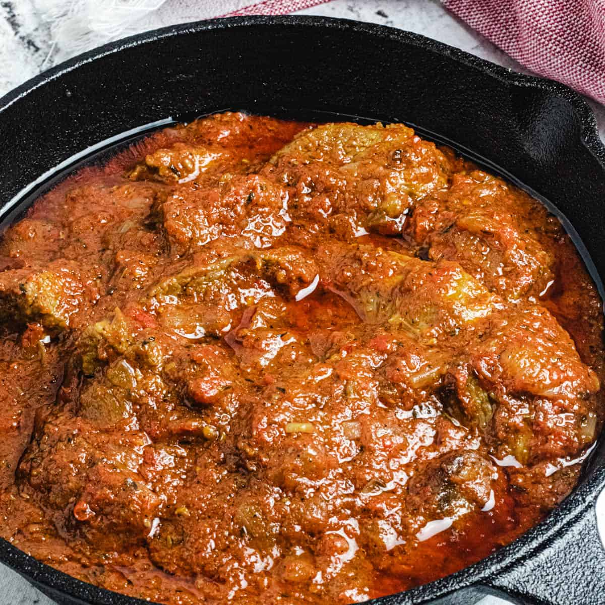

Nigerian Stew
Home

Nigerian Beef Stew Recipe
Nigerian Stew comes in many varieties. Beef, Chicken, Goat, and Fish are some of the more common and popular types but in this article we will be going over the Nigerian Beef Stew.
- Blended Peppers/tomatoes
- Beef cuts/tripe pre cooked
- Oil
- Spices
Recipe Steps
- Add olive oil or an oil of your choice to a pot
- Once the oil is hot begin to add in the blended peppers and tomatoes
- Add in Bouillon Powder